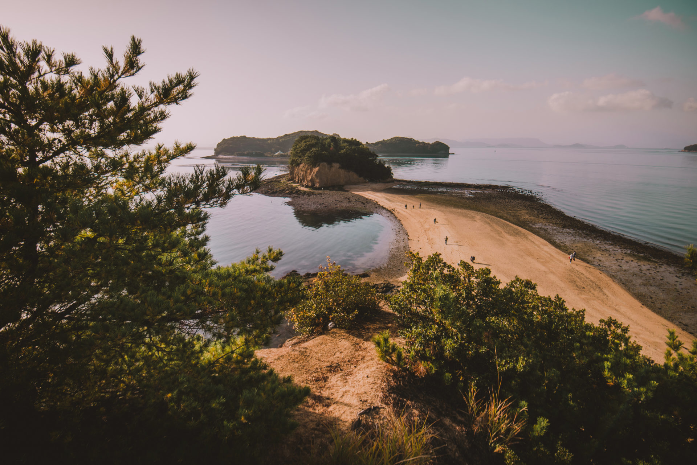
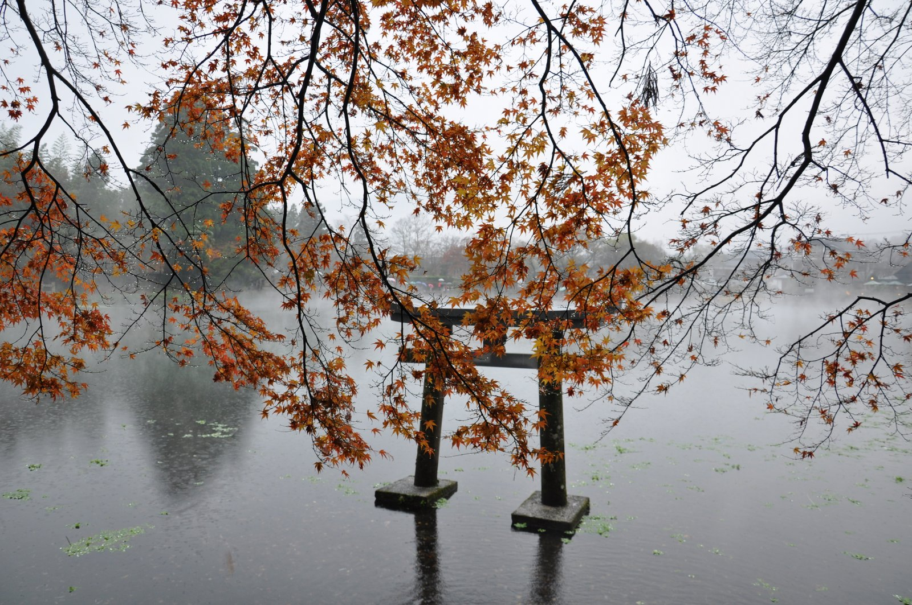

C’est un monde à part, un monde où le respect, la délicatesse et l'harmonie sont rois !
J’ai fortement été marqué par ce voyage et ce pays si unique! Bon voyage au pays du soleil levant !
Le territoire Japonnais est en réalité recouvert à 70% par des montagnes, et il est majoritairement rural. Quand on s’éloigne de Tokyo, le vert est omniprésent. Nous ne nous attendions pas du tout à tant de nature, même dans les grandes villes comme Kyoto.
Le Japon ne se réduit donc pas aux grandes villes modernes, et les paysages sont très variés. En deux semaines, nous sommes restés sur l’île principale de Honshu. Sur la côte nord nous avons vu des plages et des villages de pêcheurs, dans les terres les villages typiques nous ont séduits. Nous avons entrapercu la montagne pour la randonnée de Magome à Tsumago, mais nous irons dans les Alpes japonaises lors d’un prochain séjour.
Visiter Tokyo, c’est incontournable !
| Lieu | Description |
|---|---|
|  |
L'île de Shodoshima L'île de Shodoshima possède un relief étonnant, entre mer et montagne. D'ailleurs, même si l'on a peu d'infos sur cette île en tant que touristes étranger, l'île de Shodoshima est extrêment populaire auprès des Japonais ! Et l'un des principaux points d'intérêt, qui attire autant les visiteurs, ce sont les gorges de Kankakai. |
|  |
L'île de Kyushu Située tout au sud du pays, c’est un peu la Côte d’Azur nippone, avec ses palmiers, ses plages… La comparaison s’arrête là, car pour le reste c’est plutôt volcans, montagnes et bains d’eau thermale. |
|
L'île de Taketomi On dit de Taketomi, cette île située à 15 minutes de ferry d’Ishigaki qu’elle est un véritable musée vivant de la culture des Ryukyu, à mille lieues du Japon moderne. J’avais eu echo qu’à Taketomi, le temps semble s’être arrêté, eh bien c’est vrai. Sur l’île, les routes sont remplacées par des pistes et les voitures par des buffles. Entourée par les eaux claires, l’île est vraiment un petit paradis où le cachet d’antan opère toujours. |
- 3 nuits à Tokyo – pour faire ses premiers pas au Japon, dans les quartiers de Yanaka, Ueno, Akihabara, Asakusa, Odaiba.
- 2 nuits à Nara – pour errer dans le parc aux daims, visiter les temples au coeur de la forêt, arpenter les ruelles charmantes de la ville.
- 2 nuits à Amanohashidate – pour admirer l’une des trois plus belles vues du Japon et visiter Ine, village de pêcheurs traditionnel.
- 3 nuits à Kyoto – pour découvrir quelques temples grandioses parmi les 2000 de la ville.
- 1 nuit à Nakatsugawa pour faire la randonnée de Magome à Tsumago, sentier datant de l’époque Edo.
- 1 nuit à Kawaguchiko pour voir (ou pas selon la météo) le Mont Fuji.
- 2 nuits à Tokyo – pour vivre des expériences délirantes dans les quartiers ultra modernes de Shibuya, Shinkuju, et Harajuku.